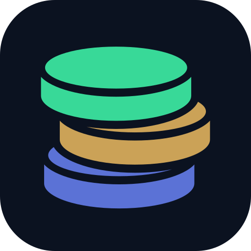

Web / PWA

Full-colour app tile
Android · circle mask
Clear space for launcher masks
Android · rounded mask
Same foreground, separate background
Favicon · actual sizes
16px32px48px
SVG and multi-resolution ICO
Monochrome / notifications
Transparent silhouette; system supplies tint
Status bar · actual sizes
24px32px
No opaque tile in the notification alpha
Blue · #5B72D6Mint · #38D998Amber · #CBA257